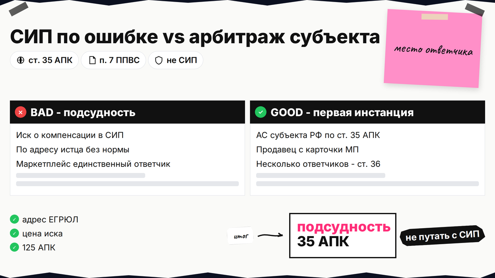
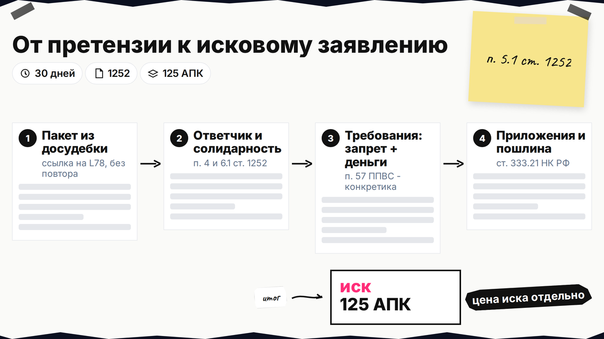
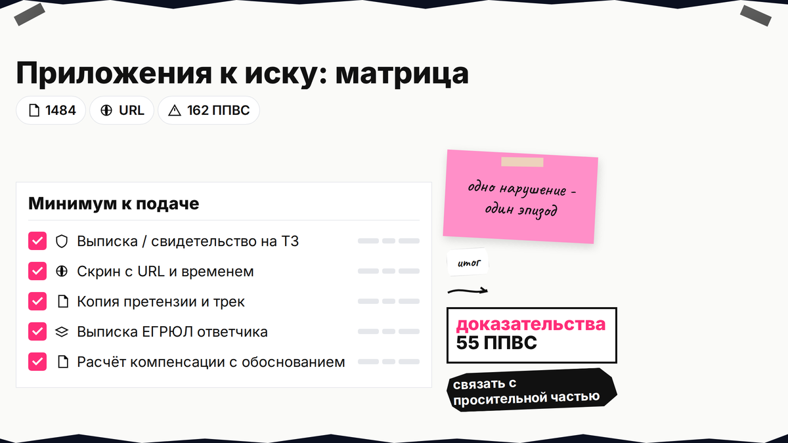

Прошло 30 дней после претензии, а на маркетплейсе всё ещё ваш знак у чужого продавца. Дальше - иск в арбитраж о запрете и компенсации, а не третья жалоба площадке. Тема "иск о нарушении прав на товарный знак" сводится к ответчику, подсудности (не СИП) и приложениям по ст. 125 АПК РФ. Вы перенесёте в иск уже собранные доказательства и избежите возврата. 23.11.2026; не индивидуальная юридическая консультация.
TL;DR / Быстрый инсайт: Иск о нарушении прав на товарный знак между ООО и ИП - в арбитраж субъекта по адресу ответчика (ст. 35 АПК), не в СИП. Компенсация - после претензии и 30 дней (п. 5.1 ст. 1252). Запрет формулируйте по URL и артикулам (п. 57 ППВС № 10). Досудебку см. нарушают товарный знак: что делать правообладателю.
Исковое заявление - документ в суд с требованиями, фактами и списком приложений. Первая инстанция по компенсации за ТЗ - арбитраж субъекта; СИП - для иных споров (например оспаривание Роспатента). Сходство знаков и скриншоты вы уже оформили до претензии - в L80 только судебная упаковка.

Делайте: приложите к иску свидетельство или выписку из реестра, документы о лицензии или цепочке отчуждения, если действуете не как правообладатель в реестре. В шапке иска укажите номер знака, дату регистрации и перечень товаров, на который опираетесь (п. 1 ст. 1484).
Не делайте: назначать ответчиком только маркетплейс, если спорное использование идёт от конкретного продавца на витрине. По п. 4 ст. 1252 требования об изъятии и ответственности адресуются изготовителю, импортёру, хранителю, продавцу или иному распространителю. Площадку имеет смысл включать, если она сама размещает обозначение или иначе вмешивается в спор - иначе суд откажет в иске к оператору.
| Канал нарушения | Кого указать в иске | Что приложить |
|---|---|---|
| Карточка на маркетплейсе | Продавец - ИП или ООО из реквизитов витрины | Скрин, выписка ЕГРЮЛ/ЕГРИП, данные личного кабинета продавца |
| Офлайн-магазин, вывеска | Владелец точки или арендатор по договору | Фото, адрес, при возможности закупка с чеком |
| Сотрудник без согласия работодателя | Работодатель (п. 54 ППВС № 10) | Доказательства должностных обязанностей, публикации от имени компании |
| Несколько юрлиц в цепочке | Каждого участника или солидарно (п. 6.1 ст. 1252) | Схема поставок, кто вводил товар в оборот |
Компенсацию между ЮЛ и ИП в арбитраже просите только после претензии и 30 дней молчания, отказа или частичного ответа (п. 5.1 ст. 1252). Делайте: в иске укажите дату письма, способ отправки, трек и приложите копию с расчётом. Не делайте: пропускать блок при денежном требовании; иск только о запрете (подп. 2 п. 1 ст. 1252) претензию не требует, но и деньги без уточнения не взыщете.
Подсудность: арбитраж субъекта по ст. 35 АПК (адрес ответчика), не СИП (п. 7 ППВС № 10). Несколько ответчиков - п. 2 ст. 36 АПК. Не делайте: подавать в СИП "за компенсацию за ТЗ" и ссылаться на подсудность "где сидит истец в интернете" без нормы АПК.

Стандартный пакет требований правообладателя:
Делайте: в описательной части для каждого эпизода свяжите способ использования (п. 2 ст. 1484), сходство, однородность (п. 162 ППВС № 10) и отсутствие лицензии. Для суда достаточно опасности смешения, а не доказанного факта путаницы покупателей.
Не делайте: просить "запретить любое использование товарного знака в будущем" - п. 57 ППВС № 10 требует конкретных действий. Не смешивайте в одном предложении все три вида компенсации из п. 4 ст. 1515.
Глубокий расчёт компенсации - отдельный материал кластера A13; в иске зафиксируйте один способ п. 4 ст. 1515 и цену иска. Возражения ответчика - в гайде для стороны нарушителя.

Суд оценивает доказательства в совокупности (п. 55 ППВС № 10); перечня "только из списка" нет, но связь с доводами обязательна.
| Блок иска | Норма | Что в приложениях |
|---|---|---|
| Право истца | ст. 1484 п. 1 | Свидетельство, выписка реестра, лицензия, договор отчуждения |
| Факт использования | п. 2 ст. 1484 | Скрины с URL и временем, распечатки, видео закупки, чек (практика С01-802/2026) |
| Сходство и однородность | п. 3 ст. 1484, п. 162 ППВС | Сравнительная таблица, образцы товара, перечень МКТУ |
| Досудебный порядок | п. 5.1 ст. 1252, п. 8 ст. 125 АПК | Претензия, трек, ответ или расчёт 30 дней |
| Компенсация | п. 4 ст. 1515, п. 61 ППВС | Расчёт, при 2× товаре - данные о цене и количестве |
По делу 17АП-2244/26 суды отделяют предмет доказывания (право и факт использования) от формальных возражений ответчика; в иске заранее укажите, каким приложением закрываете каждый элемент.
Делайте: составьте оглавление приложений с нумерацией как в требованиях ст. 125 АПК, приложите копии для ответчика и отметку об уплате госпошлины. Усилите скрины нотариальным осмотром, если ответчик уже снимал карточки после вашего письма.
Не делайте: класть в иск сырые файлы без пояснения, какой эпизод они подтверждают. Один способ использования - одно описание в тексте (п. 1.1 ст. 1252).
Маршрут правообладателя:
Досудебный пакет (L78) → ответчик и адрес → претензия / 30 дней → иск в АС субъекта → приложения → госпошлина → отслеживание принятия
Общий процесс арбитража по ИС - в защите интеллектуальных прав в суде. Если ответчик прислал встречное письмо, сверьте сроки с образцом ответа на претензию (это зеркальный сценарий, не копируйте чужие доводы в свой иск). Сопровождение спора - услуги Lireate по товарному знаку.
| Ошибка | Последствие | Как исправить до подачи |
|---|---|---|
| Иск о компенсации в СИП | Возврат или передача по подсудности | АС субъекта по ст. 35 АПК |
| Нет блока о претензии и 30 днях | Оставление без движения / отказ в иске | Приложить претензию и доказательства отправки |
| Ответчик - только МП | Отказ в части требований | Добавить продавца, обосновать роль площадки |
| Общий запрет "навсегда" | Сужение удовлетворённых требований | Перечень URL, SKU, адресов |
| Цена иска не совпадает с расчётом | Возврат на доработку | Один расчёт в тексте и в приложении |
Делайте: сверить реквизиты ст. 125 АПК и копии для ответчика. Не делайте: повторять претензию в теле иска без нумерации приложений.
Материал проверен: эксперт Елена Ковалева (Главный эксперт по SEO/GEO).
Достоверность данных: нормы ГК РФ, АПК РФ, ППВС № 10/2019 и открытая судебная практика сверены на 23.11.2026; ключевые фразы согласованы с кластером A12 "иск о нарушении прав на товарный знак".
В арбитраж субъекта РФ по адресу ответчика (ст. 35 АПК). СИП для такой компенсации в первой инстанции не подходит (ч. 4 ст. 34 АПК, п. 7 ППВС № 10).
Да между ЮЛ и ИП: п. 5.1 ст. 1252, затем 30 дней, отказ или частичный ответ. Приложите к иску копию и трек.
Да по подп. 2 п. 1 ст. 1252. Деньги взыщете после уточнения иска и соблюдения досудебного порядка по п. 5.1.
Продавца из реквизитов карточки. Площадку - только если она сама нарушает, иначе иск к оператору часто отклоняют.
Реестр на ТЗ, фиксация п. 2 ст. 1484, связь с ответчиком, сходство, претензия при деньгах. Скрины - с URL и временем (п. 55 ППВС № 10).
Конкретные URL, артикулы, адрес вывески - не общий запрет "навсегда" (п. 57 ППВС № 10).
L78 - фиксация и претензия; здесь - иск, подсудность и приложения.